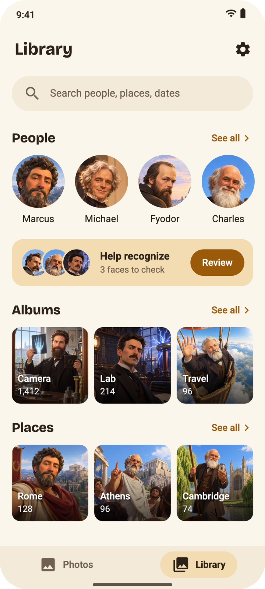

Memoria Photo
The gallery that knows your people, and tells no one.
I wanted the best part of Google Photos, tapping a face and seeing every photo of that person, without sending my photos to anyone. So I built an Android gallery that does the face part on the phone itself. Nothing gets uploaded, and there's no account to make.
It's free, open source (GPL-3.0) and still young. It needs Android 13 or newer.
Download the APK or read the source on GitHub.
What it does

- Shows the photos already on your phone by day and month, with a slider to jump through the years.
- Finds faces in the background and groups them into people. You name someone once and every photo follows.
- When it isn't sure about a face, it asks you (Yes, No or Not a face) instead of guessing.
- Finds your cats and dogs and groups each pet like a person.
- Albums, places (town names worked out offline), favorites, videos and trash.
- Sorts photos into categories like pets, documents, food and sunsets.
- Search by person, place, month or category.
How good is the face part?
This is the part I care about most. The app would rather leave a face unsorted than put it in the wrong person. A new person only starts from sharp camera faces seen in at least 6 photos, so screenshots and memes don't add strangers.
On a real phone library it sorted over 3,000 faces, and not one of them landed in the wrong person.
The models (YOLOv5-face, eDifFIQA and AdaFace) were picked by testing several of them side by side on real photos. My notes on that are here.
Your photos stay yours
- All the AI runs on the phone. No photo is ever uploaded or looked at anywhere else.
- No account, ads, analytics or trackers. This page doesn't load anything from other sites either.
- Faces and names stay in a local database, and Android's cloud backup is off for it.
- The app never copies your photos. It works with the ones already on the phone.
- It goes online only to download the models once (about 425 MB) and to check GitHub for updates, which you can turn off.
Is it fast?
On a Snapdragon 8 Elite it takes about 70 ms per photo on the NPU, so 10,000 photos are done in around 22 minutes. The NPU works on Snapdragon 8 Gen 1 and newer. Other phones use the GPU, which is almost as fast, or the CPU, which is a lot slower (about half a second per photo).
Not there yet
- Search with any words, like "the blue bike" or "cake with candles".
- Pets, found and grouped like people.
- Video compression.
- Import from Google Takeout.
- Dark theme.
The full plan is in ROADMAP.md.
Installing
- Get
memoria-<version>.apkfrom Releases and open it on your phone. - Open the app on Wi-Fi. It downloads the models by itself, once.
- That's it. The photo scan starts when the models are ready.
Want to check the APK is really mine? Its signing certificate SHA-256 should be:
bc1c500550d9e3bd73e27f44132877189329f88875ace0bd6049a828e792b240
apksigner verify --print-certs memoria-<version>.apk prints it.